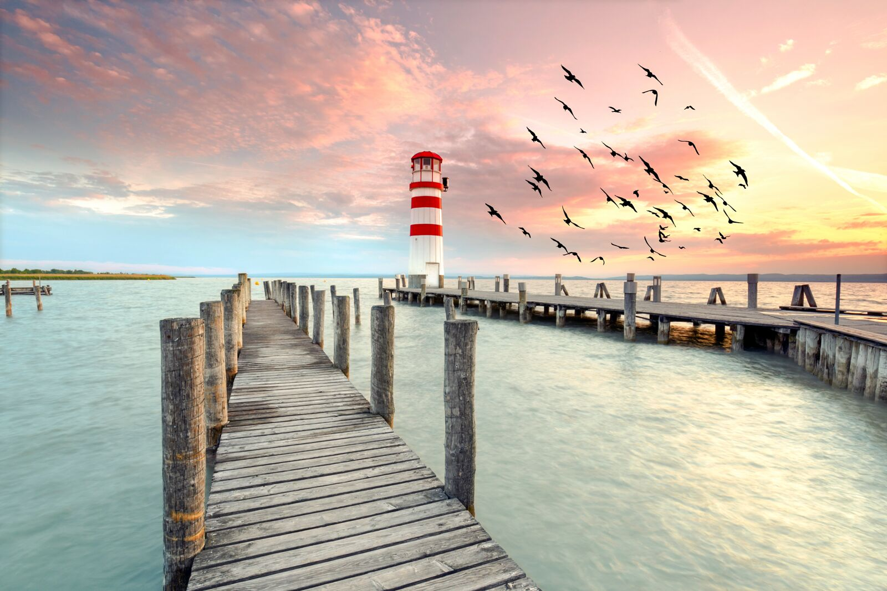
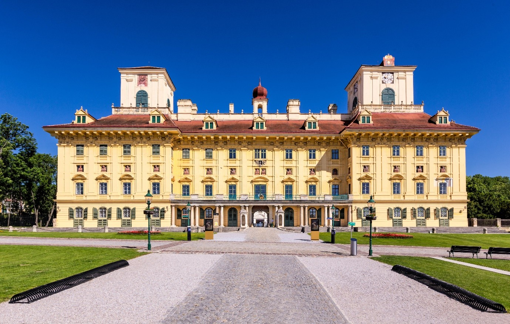
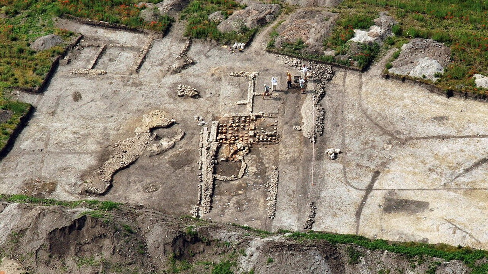
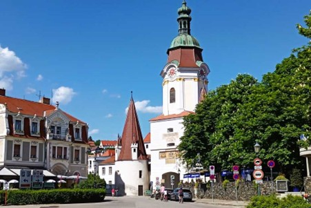
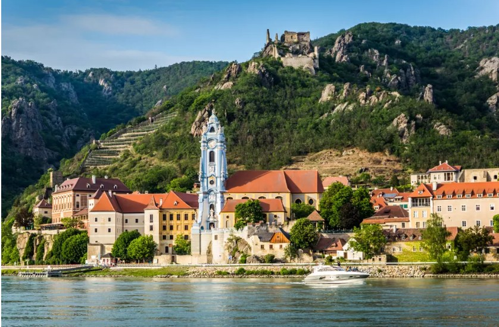
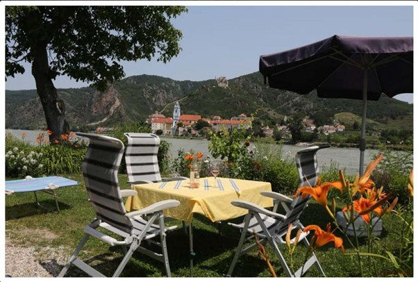

DAY01 – Fertő tó és Wachau
A mérés automatikusan indul oldalnyitáskor, majd 5 mp múlva frissít.
A távolságok minden célpontnál frissülnek, és az oldal a legvalószínűbb következő pontra ugrik.
A böngésző nem tudott helyet kérni. Ellenőrizd a helymeghatározási engedélyt (Telefon: beállítások → Böngésző → Hely).
1. Fertő-tó keleti térség
47.660292, 16.643593
mérés: várakozás
távolság: —
A Fertő-tó Európa egyik legkülönlegesebb tava, a kontinens legnyugatibb
sztyepptava. Sekély vize és nádasai UNESCO világörökségi területet alkotnak,
az átlagmélység kb egy méter. Több mint 300 madárfaj él itt.

2. Eisenstadt – Kismarton
47.845947, 16.519620
mérés: várakozás
távolság: —
Burgenland fővárosa, egykori Esterházy központ. A barokk kastélyban
Joseph Haydn több mint negyven évig dolgozott.
1921-ig Magyarországhoz tartozott.

3. Leithaprodersdorf – várfal rom
47.947851, 16.409055
mérés: várakozás
távolság: —
Középkori védmű maradványa a határvidéken. A Bécsi-medence
irányába vezető átkelőket felügyelte.
Nem térünk be, kb 1 km-es kitérő lenne.

4. Krems an der Donau
48.410091, 15.599190
mérés: várakozás
távolság: —
Több mint ezeréves város, a Wachau keleti kapuja.
UNESCO világörökségi terület. A Steiner Tor és a
teraszos szőlők ikonikus látványt adnak.

5. Dürnstein – kék templom
48.395521, 15.520062
mérés: várakozás
távolság: —
A Wachau ikonikus látványa. A kék torony messziről
felismerhető, csak elhaladunk mellette,
nem állunk meg.

6. Wachau Camping Rossatz
48.389414, 15.516214
mérés: várakozás
távolság: —
Közvetlenül a Duna partján fekvő kemping,
szemben Dürnsteinnel. Este gyakran kivilágítják
a várromot. Wachauer Marille hazája.
